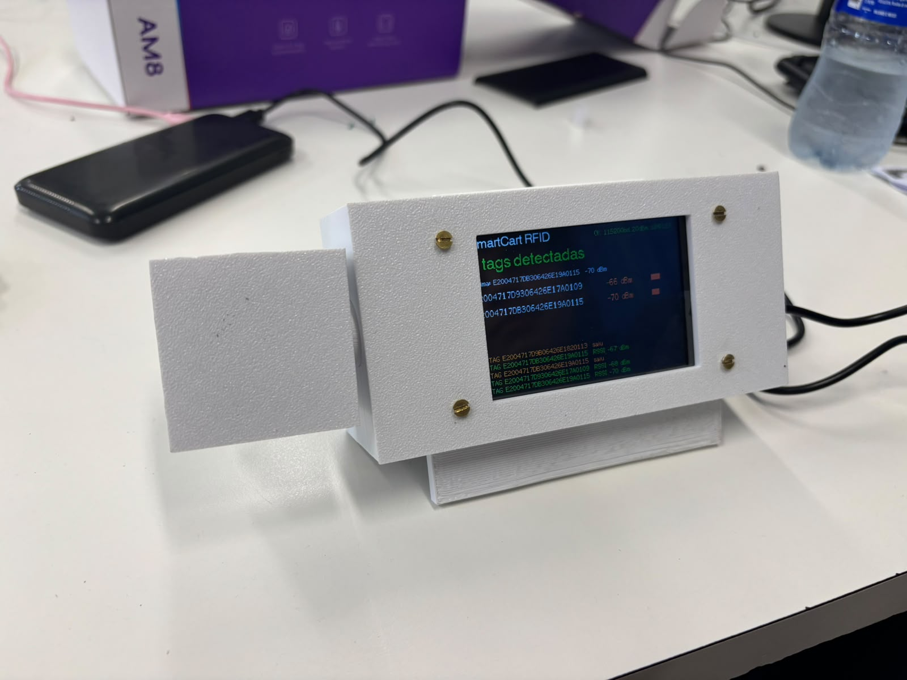
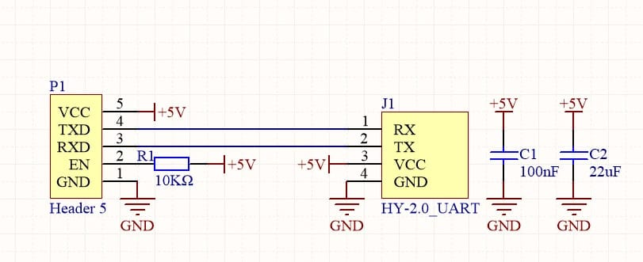

Sobre o Smart Cart
O Smart Cart é um carrinho de compras inteligente que ajuda você a gerenciar suas compras de forma eficiente e prática.

O Smart Cart é um carrinho de compras inteligente que ajuda você a gerenciar suas compras de forma eficiente e prática.
A parte mecânica do Smart Cart foi modelada no FreeCAD e busca permitir fácil acesso aos componentes, além de permitir que a fonte seja carregada sem desmontá-lo, e permitir uma angulação do sensor para o interior do carrinho.

A parte eletrônica do Smart Cart é composta por uma ESP32-3248S035c e um leitor RFID YRM100 UHF